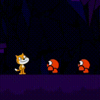
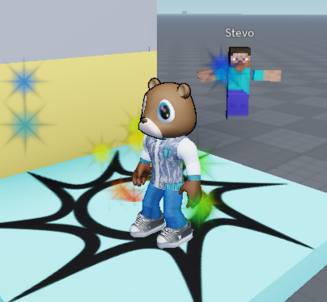
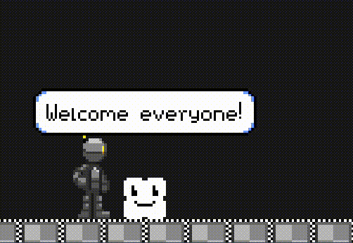

The fruits of my labor.
There is many of my main projects I made along the road, starting with...
- First projects in Scratch - Here you can see my very first raw projects. They're so simple and just... buggy...
- Roblox raw map - It's just a first project of Roblox I made back in the day. It's nothing but an anthem to learn luascript for the first time (later on I also tried learning Lua for FNF modding, but there's no longer registration of any assets).
- Junior Colegas PFizer Copilot presentation - The presentation used to explain to many PFizer employees about Copilot, it's use and the better way of it. There's two versions: a pre/scratch one and the final version.
- Music/Covers i made - Thanks to the radio production experience, I got addicted to making and remaking some music techniques. I just couldn't get enough by just listening to music... so I put my ears, hands and soul to the melodies.
- My most recent project - Many anthems and years went by, but my passion to make an awesome game with all the things I love persisted, and nowdays I'm programing this game (and yes, it's still a downloadable demo). Sooner all this will get even better ;)




